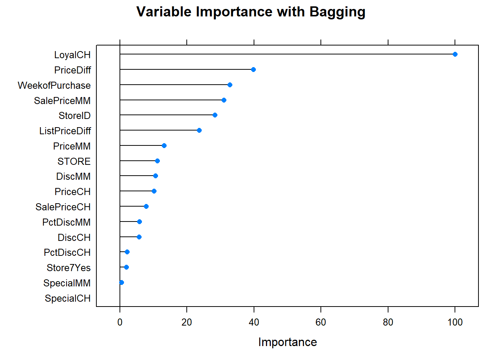

8.3 Bagged Trees
One drawback of decision trees is that they are high-variance estimators. A small number of additional training observations can dramatically alter the prediction performance of a learned tree.
Bootstrap aggregation, or bagging, is a general-purpose procedure for reducing the variance of a statistical learning method. The algorithm constructs B regression trees using B bootstrapped training sets, and averages the resulting predictions. These trees are grown deep, and are not pruned. Hence each individual tree has high variance, but low bias. Averaging the B trees reduces the variance. The predicted value for an observation is the mode (classification) or mean (regression) of the trees. B usually equals ~25.
To test the model accuracy, the out-of-bag observations are predicted from the models. For a training set of size n, each tree is composed of \(\sim (1 - e^{-1})n = .632n\) unique observations in-bag and \(.368n\) out-of-bag. For each tree in the ensemble, bagging makes predictions on the tree’s out-of-bag observations. I think (see page 197 of (Kuhn and Johnson 2016)) bagging measures the performance (RMSE, Accuracy, ROC, etc.) of each tree in the ensemble and averages them to produce an overall performance estimate. (This makes no sense to me. If each tree has poor performance, then the average performance of many trees will still be poor. An ensemble of B trees will produce \(\sim .368 B\) predictions per unique observation. Seems like you should take the mean/mode of each observation’s prediction as the final prediction. Then you have n predictions to compare to n actuals, and you assess performance on that.)
The downside to bagging is that there is no single tree with a set of rules to interpret. It becomes unclear which variables are more important than others.
The next section explains how bagged trees are a special case of random forests.
8.3.1 Bagged Classification Tree
Leaning by example, I’ll predict Purchase from the OJ data set again, this time using the bagging method by specifying method = "treebag". Caret has no hyperparameters to tune with this model, so I won’t set tuneLegth or tuneGrid. The ensemble size defaults to nbagg = 25, but you can override it (I didn’t).
set.seed(1234)
oj_mdl_bag <- train(
Purchase ~ .,
data = oj_train,
method = "treebag",
trControl = oj_trControl,
metric = "ROC"
)
oj_mdl_bag$finalModel##
## Bagging classification trees with 25 bootstrap replications## Bagged CART
##
## 857 samples
## 17 predictor
## 2 classes: 'CH', 'MM'
##
## No pre-processing
## Resampling: Cross-Validated (10 fold)
## Summary of sample sizes: 772, 772, 771, 770, 771, 771, ...
## Resampling results:
##
## ROC Sens Spec
## 0.86 0.84 0.72If you review the summary(oj_mdl_bag), you’ll see that caret built B = 25 trees from 25 bootstrapped training sets of 857 samples (the size of oj_train). I think caret started by splitting the training set into 10 folds, then using 9 of the folds to run the bagging algorithm and collect performance measures on the hold-out fold. After repeating the process for all 10 folds, it averaged the performance measures to produce the resampling results shown above. Had there been hyperparameters to tune, caret would have repeated this process for all hyperparameter combinations and the resampling results above would be from the best performing combination. Then caret ran the bagging algorithm again on the entire data set, and the trees you see in summary(oj_mdl_bag) are what it produces. (It seems inefficient to cross-validate a bagging algorithm given that the out-of-bag samples are there for performance testing.)
Let’s look at the performance on the holdout data set.
oj_preds_bag <- bind_cols(
predict(oj_mdl_bag, newdata = oj_test, type = "prob"),
Predicted = predict(oj_mdl_bag, newdata = oj_test, type = "raw"),
Actual = oj_test$Purchase
)
oj_cm_bag <- confusionMatrix(oj_preds_bag$Predicted, reference = oj_preds_bag$Actual)
oj_cm_bag## Confusion Matrix and Statistics
##
## Reference
## Prediction CH MM
## CH 113 16
## MM 17 67
##
## Accuracy : 0.845
## 95% CI : (0.789, 0.891)
## No Information Rate : 0.61
## P-Value [Acc > NIR] : 0.0000000000000631
##
## Kappa : 0.675
##
## Mcnemar's Test P-Value : 1
##
## Sensitivity : 0.869
## Specificity : 0.807
## Pos Pred Value : 0.876
## Neg Pred Value : 0.798
## Prevalence : 0.610
## Detection Rate : 0.531
## Detection Prevalence : 0.606
## Balanced Accuracy : 0.838
##
## 'Positive' Class : CH
## The accuracy is 0.8451 - surprisingly worse than the 0.85915 of the single tree model, but that is a difference of three predictions in a set of 213. Here are the ROC and gain curves.
mdl_auc <- Metrics::auc(actual = oj_preds_bag$Actual == "CH", oj_preds_bag$CH)
yardstick::roc_curve(oj_preds_bag, Actual, CH) %>%
autoplot() +
labs(
title = "OJ Bagging ROC Curve",
subtitle = paste0("AUC = ", round(mdl_auc, 4))
)yardstick::gain_curve(oj_preds_bag, Actual, CH) %>%
autoplot() +
labs(title = "OJ Bagging Gain Curve")
Let’s see what are the most important variables.
 Finally, let’s check out the scoreboard. Bagging fared worse than the single tree models.
oj_scoreboard <- rbind(oj_scoreboard,
data.frame(Model = "Bagging", Accuracy = oj_cm_bag$overall["Accuracy"])
) %>% arrange(desc(Accuracy))
scoreboard(oj_scoreboard)Model | Accuracy |
Single Tree | 0.8592 |
Single Tree (caret) | 0.8545 |
Bagging | 0.8451 |
8.3.2 Bagging Regression Tree
I’ll predict Sales from the Carseats data set again, this time using the bagging method by specifying method = "treebag".
set.seed(1234)
cs_mdl_bag <- train(
Sales ~ .,
data = cs_train,
method = "treebag",
trControl = cs_trControl
)
cs_mdl_bag## Bagged CART
##
## 321 samples
## 10 predictor
##
## No pre-processing
## Resampling: Cross-Validated (10 fold)
## Summary of sample sizes: 289, 289, 289, 289, 289, 289, ...
## Resampling results:
##
## RMSE Rsquared MAE
## 1.7 0.68 1.3Let’s look at the performance on the holdout data set. The RMSE is 1.9185, but the model over-predicts at low end of Sales and under-predicts at high end.
cs_preds_bag <- bind_cols(
Predicted = predict(cs_mdl_bag, newdata = cs_test),
Actual = cs_test$Sales
)
(cs_rmse_bag <- RMSE(pred = cs_preds_bag$Predicted, obs = cs_preds_bag$Actual))## [1] 1.9cs_preds_bag %>%
ggplot(aes(x = Actual, y = Predicted)) +
geom_point(alpha = 0.6, color = "cadetblue") +
geom_smooth(method = "loess", formula = "y ~ x") +
geom_abline(intercept = 0, slope = 1, linetype = 2) +
labs(title = "Carseats Bagging, Predicted vs Actual (caret)")
Now the variable importance.

Before moving on, check in with the scoreboard.
cs_scoreboard <- rbind(cs_scoreboard,
data.frame(Model = "Bagging", RMSE = cs_rmse_bag)
) %>% arrange(RMSE)
scoreboard(cs_scoreboard)Model | RMSE |
Bagging | 1.9185 |
Single Tree (caret) | 2.2983 |
Single Tree | 2.3632 |
References
Kuhn, Max, and Kjell Johnson. 2016. Applied Predictive Modeling. 1st ed. New York, NY: Springer. http://appliedpredictivemodeling.com/.